HalO
An SOS you can start with your phone in your bag.
HalO is a discreet safety ring and companion app concept for women commuting alone in urban and rural India. The ring triggers the emergency. The app handles everything before and after it.
View tutorial/prototype- Role
- Solo designer, end to endResearch, product definition, interaction and visual design
- Timeline
- 4 months
- Tools
- Figma, FigJam
- Scope
- iOS and Android appplus a wearable ring concept
- Status
- Concept projectGrounded in secondary research and published data
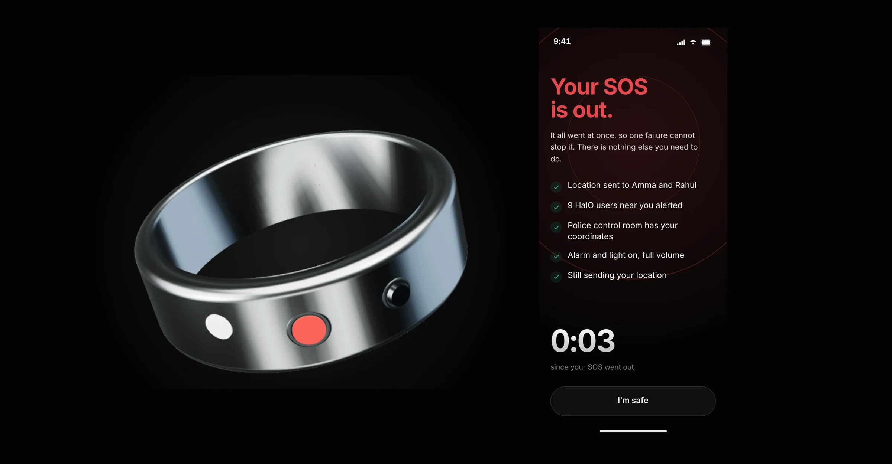
The ring. Triggers the SOS · The app. Everything before and after
The 30 second version
Safety apps fail exactly when they are needed.
They assume a calm user with a free hand and an unlocked phone. Fear takes all three away, and pulling a phone out of a bag on a crowded bus can make things worse.
Take the phone out of the critical path.
A ring you would wear anyway starts the emergency without looking. The phone does the rest: location to contacts, nearby HalO users alerted, alarm and light on the ring, all at once.
A 2 second hold, then a 5 second silent cancel.
Designed around false triggers, because a safety product that cries wolf gets taken off.
A ring concept, Figma designs and a working app prototype. Nothing has shipped, so there are no live numbers. Instead I set the targets I would hold this product to before trusting it with anyone's safety.
Asking for help can be its own obstacle.
Every safety app I audited, from bSafe to Noonlight to the SOS built into the phone, treats the phone as the trigger. So the phone has to be reachable, unlocked and usable at the exact moment all three are hardest.
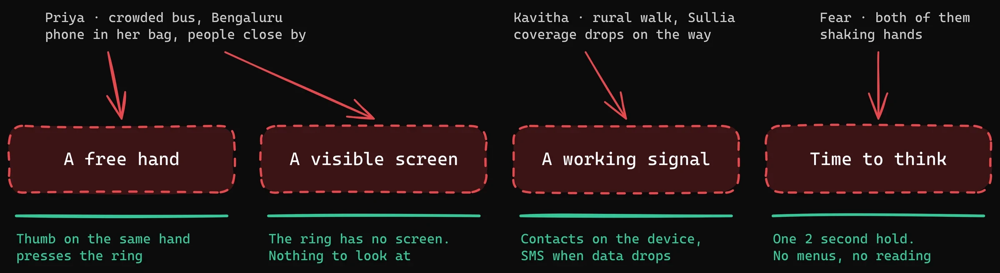
Each commute removes at least one thing an SOS button depends on. The green lines show how HalO replaces each one.
How might we get someone from fear to help when the screen is not available?
The women I designed for already take precautions. The gap is the moment itself. It had to work in a city and a village, under stress without looking down, and be discreet enough to wear every day.
One designer, four months, and one test every idea had to pass.
I worked alone, end to end: research synthesis, product definition, interaction and visual design in Figma and FigJam, and the interactive prototype. Most of my first drafts failed the test below. The ones that survived took the screen out of the critical path.
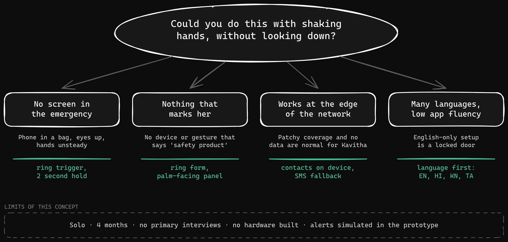
Each constraint, the reason for it, and the part of the design it shaped. The bottom row is what this concept could not cover.
Published evidence, two contexts, and one shared fear.
I started with a published study of how women in Bengaluru perceive safety on buses, then looked at what changes outside the city. I grouped the findings by the moments when asking for help could break down.
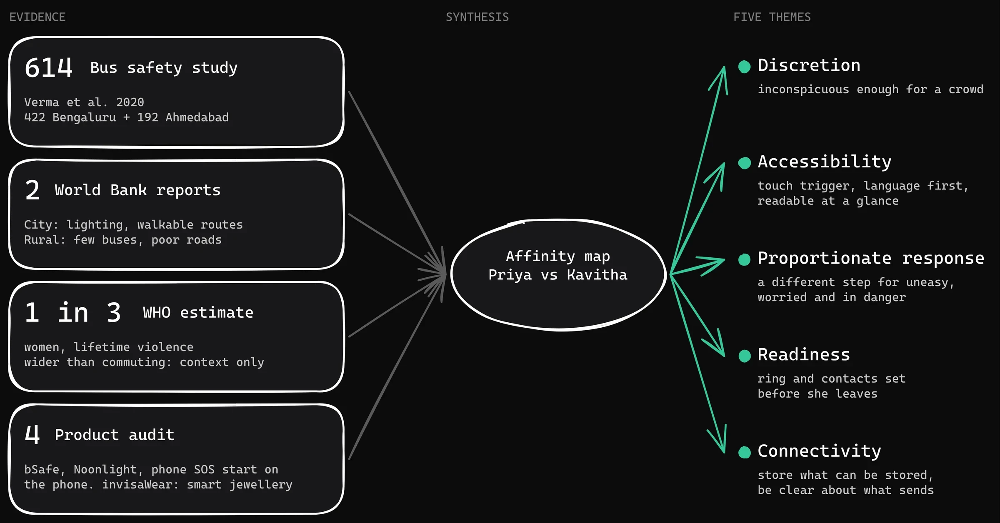
The bus study measures how safe women feel. It shaped the scenarios and constraints, not proof that a ring works. The audit showed every app starts on the phone, while invisaWear proves discreet jewellery can pair with one.
What they say, versus what they are actually thinking.
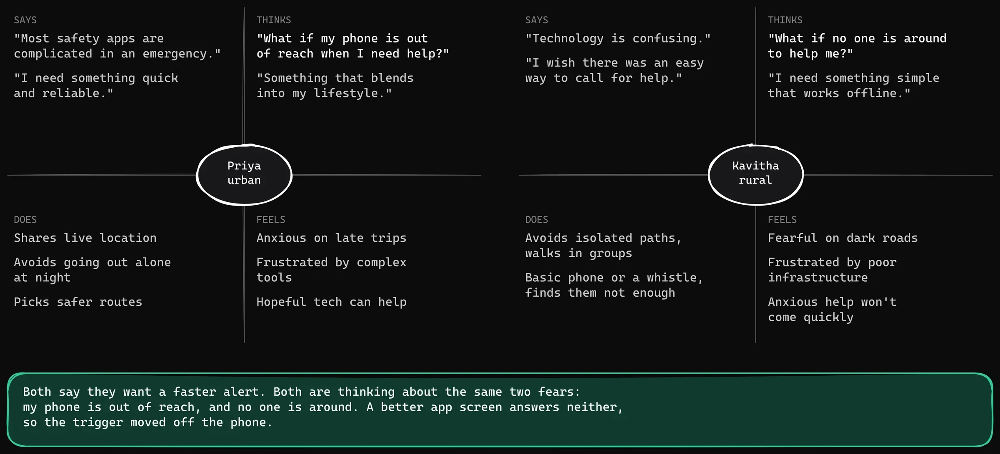
The quoted lines are the personas' voices, written from the published research.
Two commuters with the same need and almost opposite constraints.
Both want someone to help them when they need it. Priya's commute tests discretion in a crowd. Kavitha's tests how much the emergency assumes about the phone, the network and reading under pressure.
Priya Sharma, 27
Marketing professional · Bengaluru
"I feel unsafe during late-night commutes. Current safety apps feel complicated, and I don't want a bulky or obvious device."
Frustrations. Crowded or late trips feel unsafe. A visible device marks her as vulnerable. Menus cost time when she needs to act.
Goals. A one-handed gesture. A ring she'd wear as jewellery. Choice of call, share or SOS.
For the design: discretion has to be built into the form, not offered as a setting.
Kavitha Devi, 38
Farmer · Sullia, Karnataka
"I feel unsafe walking alone to the market and fields. Technology is confusing. I wish there was an easy way to call for help."
Frustrations. Help may be far away. Coverage drops in and out. Apps assume English and confidence.
Goals. A trigger found by touch. Setup in a language she reads. To know what still sends offline.
For the design: anything needing data, English or multi-step navigation in an emergency will not work.
Priya fits the defaults most pattern libraries assume. Kavitha gets none of them. I treated her constraints as non-negotiable, and the ring trigger, offline fallback and language first all came from that. Each one made the product better for Priya too.
Both are composite personas built from published research.
One rule above the rest, and one for each research theme.
When two ideas competed, these decided it. Every decision in the next section traces back to one of them.
Never reach for the phone.
Look like jewellery, act like an alarm.
Ring form, palm-facing panel, a Fake Call that looks native.
Design for Kavitha first.
Language first, a trigger found by touch, no reading during an SOS.
Match the response to the threat.
The three-rung escalation ladder.
Decide before you leave.
Setup, ring settings and contacts chosen ahead of time.
Tell the truth about delivery.
Contacts on the device, SMS fallback, delivery status.
Four decisions, and what each one cost.
Where should the SOS start?
I sketched bands, cuffs, rings, clasp bracelets and domes, and judged each by the physical act of asking for help.
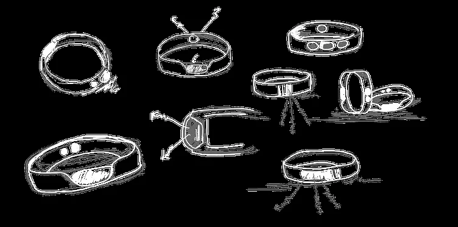
Early sketches of bands, cuffs, rings, clasps and domes.
Phone only
The phone is the thing she can't reach.
Pendant
Easy to reach, but pulling it into place makes the gesture visible.
Bracelet
Competes with a watch, and the wrist gesture is hard to hide.
Ring
The thumb reaches a palm-facing panel on the same hand: one-handed, eyes-free and invisible at once.
Hard limits on battery and radio range, so the ring only triggers and the phone does everything else.
A ladder with three rungs, not a panic button.
Most of a bad commute sits between fine and emergency, and most safety products only design for the two ends.
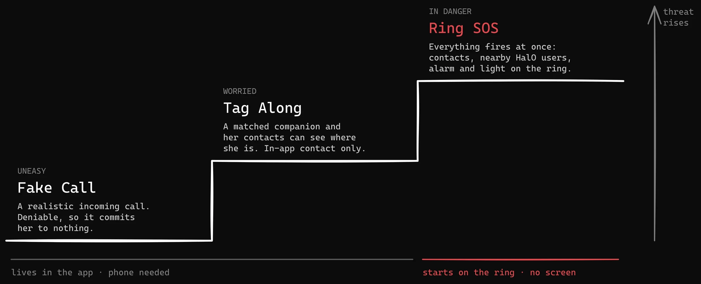
Why it was worth it
A fake call is deniable, so it draws no attention. If an SOS fires later, her Tag Along match already knows where she is. At the top everything fires in parallel, so one failed step cannot block the rest.
What I gave up
Simplicity. Three responses are more to learn than one button, and the lower rungs need the phone in hand. Tag Along also raises trust and safety questions about matching strangers that still need a review.
A 2 second hold, then 5 silent seconds to cancel on the phone.
A ring bumps tables, catches on gloves and presses against bag straps all day. A one-press SOS would alarm her contacts and nearby users for nothing, and after two or three false alarms she would take it off.
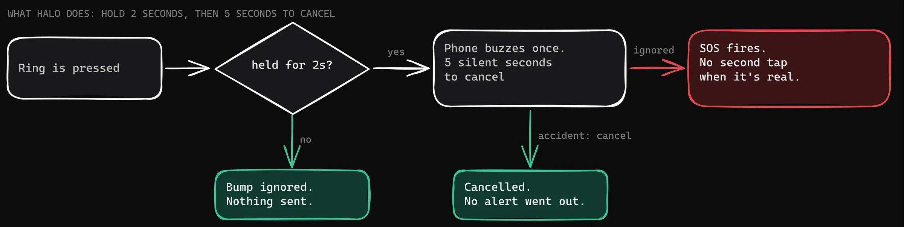
Why the cancel lives on the phone
If she meant it, she ignores the phone and the SOS goes out. If it was an accident, the phone is usually what is in front of her. A longer hold would filter more bumps, but adrenaline distorts time: two seconds can already feel like ten.
What I gave up
About 7 seconds before the alert goes out. Whether 2 seconds holds up for someone genuinely scared is the first thing I would test before this concept earns a build.
Language before anything else.
One extra tap for Priya. The whole product for Kavitha.
One more screen before any value, and four languages to start. Copy is written plainly so it survives translation.
One setup, one hub, five things she can do.
Setup happens once, calmly. After that, Home lets her jump straight to whichever response fits the moment.
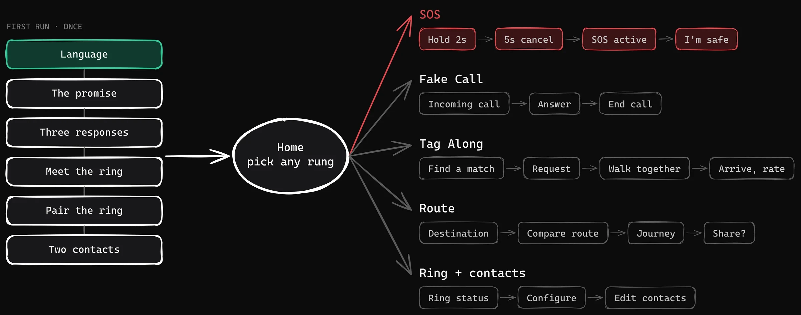
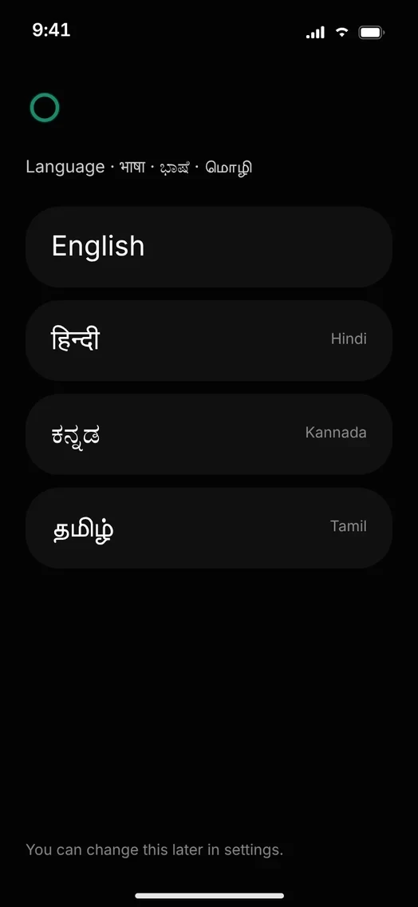
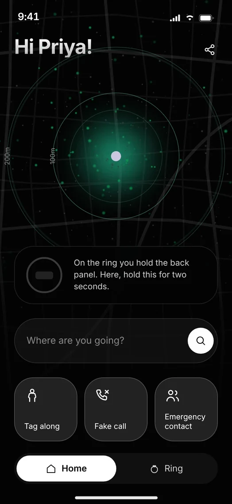
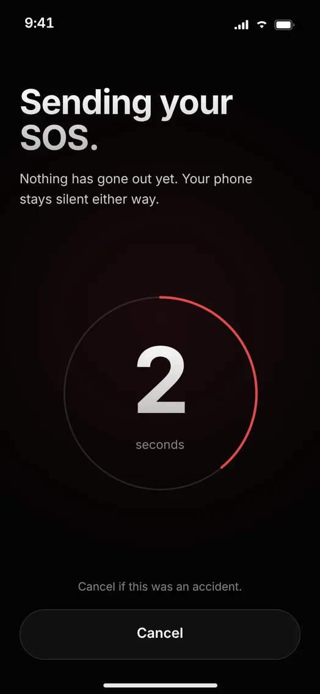
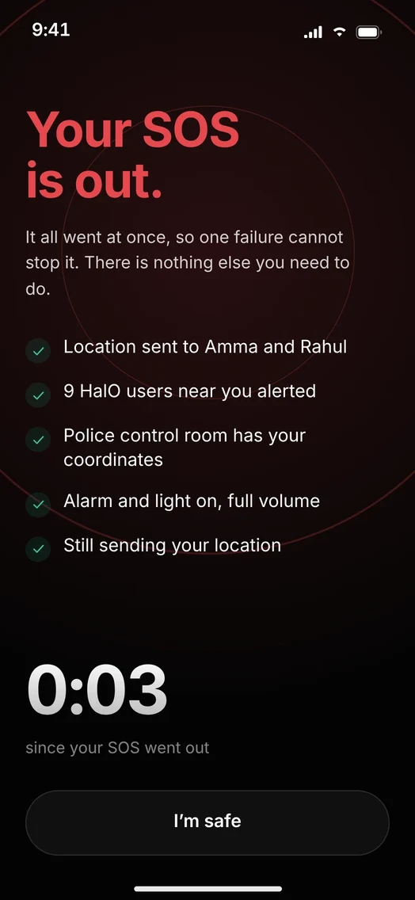
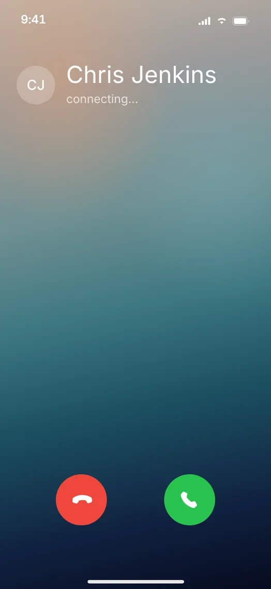
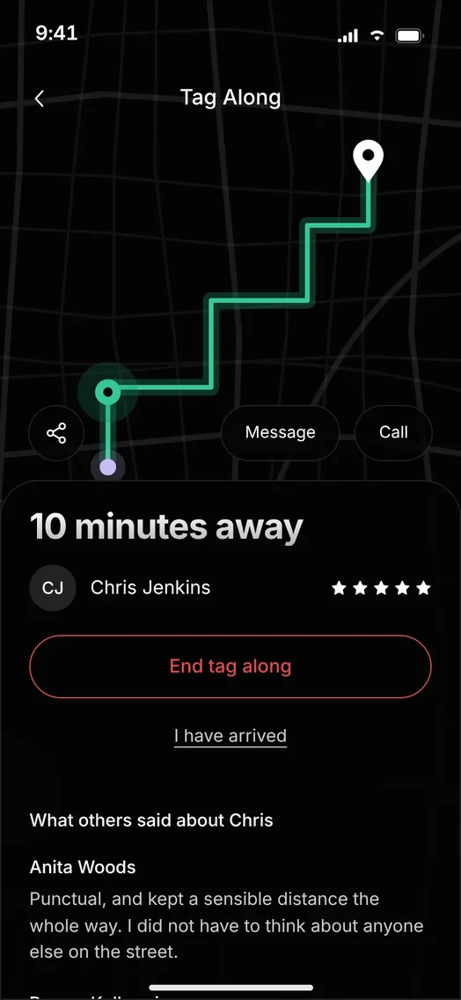
- No fixed order. She can open Fake Call, Tag Along or SOS from Home without climbing through the lower rungs first.
- Tag Along keeps numbers private. Calls and messages stay in the app, sharing with her own contacts is a separate yes or no, and she can end the session early.
- Settings stay out of the emergency. Gestures, alarm volume, flashlight and contacts are all set ahead of time.
Set up once, checked at a glance, never touched mid-emergency.
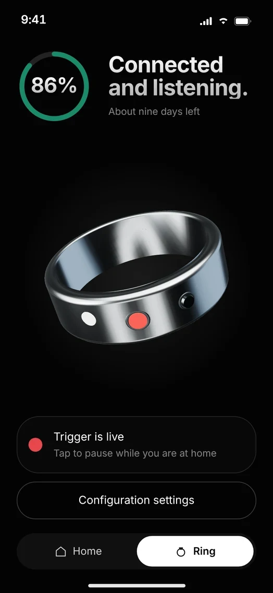
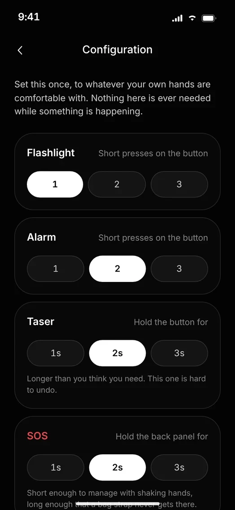
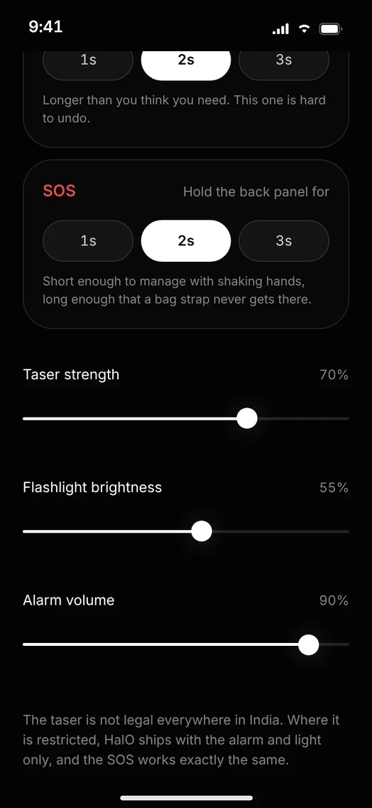
- Status answers "is it ready?" first. Connection, battery in days rather than percent alone, and whether the trigger is live sit above the ring itself.
- Pausing is one tap, for when she is home and the ring will be knocked about. The review found a paused trigger still reads "listening", so a paused banner is the fix.
- The gesture matches the stakes. Light and alarm are short presses because a mistake costs nothing. Anything hard to undo is a hold.
- The SOS hold defaults to 2 seconds, adjustable from 1 to 3, and the screen explains the trade-off in one line: short enough for shaking hands, long enough that a bag strap never gets there.
- The taser row comes from early exploration. The screen already says HalO ships with alarm and light only where it is restricted, and section 11 explains why I would cut it.
Two gestures can still share the same press count. The fix, blocking duplicates and naming the gesture already using it, is in the review findings.
Dark, quiet, and only two colours, both signals.
Built on the Opal design system. Hierarchy comes from white at set opacities and weight, so colour is free to mean one thing each.
- Green means safe, live or nearby.
- Red means SOS and nothing else, so it is never spent on decoration or errors.
Hold the panel on the back.
Two seconds, with your hand still at your side.
- System UI only, four weights.
- Headlines bold, tracking −0.022em, line height 1.04, white fading to 70%.
- Body 15 to 17px at 80% white, line height 1.6.
- One primary action per screen: a white pill, 54px tall.
- Secondary actions use glass with a hairline border.
- Elevation is a soft white glow, never a dark shadow. Radii 12 to 32px.
- Ease-out, 240 to 350ms. Forward slides left, back slides right.
- SOS screens are takeovers that fade and scale in, so they never feel like the next page.
- Fake Call breaks the system on purpose. It copies the native call screen, because a fake call only works if the person next to her believes it.
Every tap target cleared 44px, secondary text cleared 5:1 contrast on the dark ground, and status always pairs text and icon with colour.
I walked through the built prototype the way Priya would.
An expert review, not a study with participants. Half the tasks ran end to end. The other half showed me where the prototype still breaks its own promises.
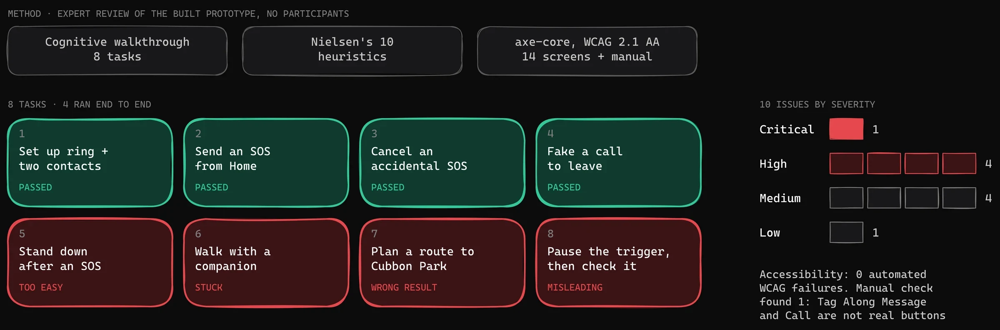
The countdown made cancelling feel safe, per-contact status answered "did anyone get it?" without another screen, and setup can't finish without two contacts, so an SOS always has someone to reach.
Words for a reader whose hands are shaking.
Each line states one true thing that has already happened.
"Nothing has been sent yet. Cancel now and no one is told." The cancel window only calms her if the copy proves nothing has left the phone, so the mechanism and the sentence are one decision.
Every SOS string is written in the fewest words that survive translation into Kannada, Tamil and Hindi.
Where it fails, and where it could do harm.
A safety product is judged by its worst moment. These are the ones I designed for, the two still open, and the parts I would cut or gate.
- The concept survives losing the deterrent. That told me the real product is the trigger and alert chain, not the hardware.
- Contacts live on the device and the map is cached, so no lookup has to succeed at the moment she triggers.
What exists today, and the numbers it has to earn.
HalO hasn't shipped, so I won't claim outcomes. Here is what the work produced, what the review measured, and the metrics I set before trusting it with anyone's safety.
Daily wear rate. A ring in a drawer protects nobody.
100%
of SOS fired correctly on the first try, under simulated stress. Anything less is a redesign.
<1
accidental SOS per user, per month. Two or three false alarms and the ring comes off.
Time to receipt
From trigger to a contact confirmed to have it, across data and SMS.
Targets I defined for a pilot, not results.
What this project changed about how I design.
- Fear is a usability constraint, and it's measurable. Simplifying a screen helps a calm user. Removing the screen is what helps a frightened one.
- The user furthest from my own experience made the best decisions. Offline-first, SMS fallback and language first all came from starting with Kavitha.
- Make waiting visible. A cancel window prevents false alarms and delays real ones, so its timing has to earn its place.
- Design for delivery. Starting, leaving the phone and being received are three different events, and each needs its own status.
- Grounded in published research, not interviews with the women I designed for.
- The ring isn't built, so battery, range and haptics are unknown.
- Alerts are simulated in the prototype.
- Stress-test the 2 second hold with a test ring. Bar: every participant triggers it first try, uncoached.
- Interview commuters in Bengaluru and Sullia, in their own languages.
- Get legal and trust and safety sign-off on Tag Along.